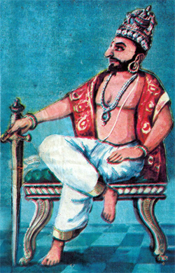
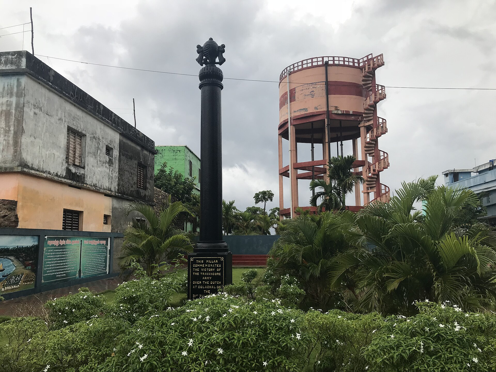
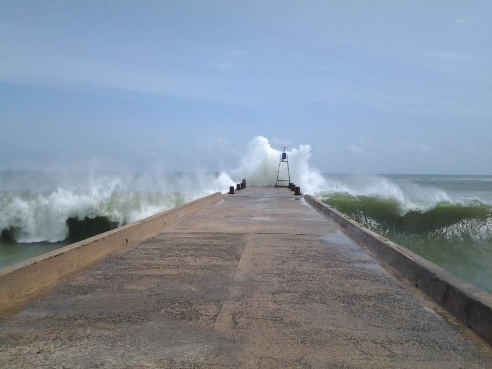
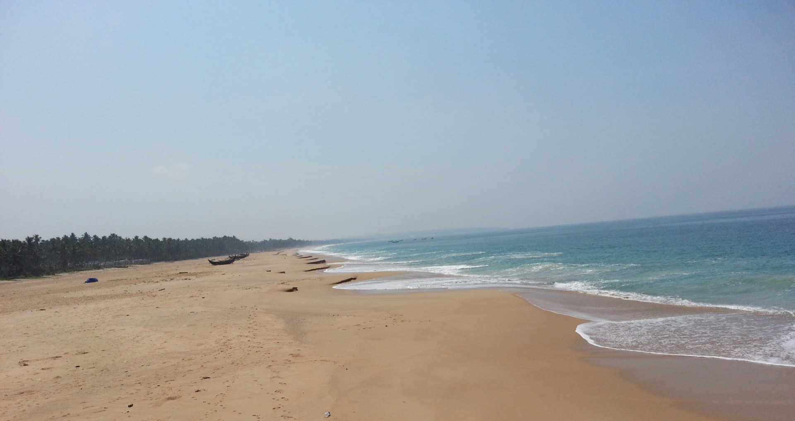
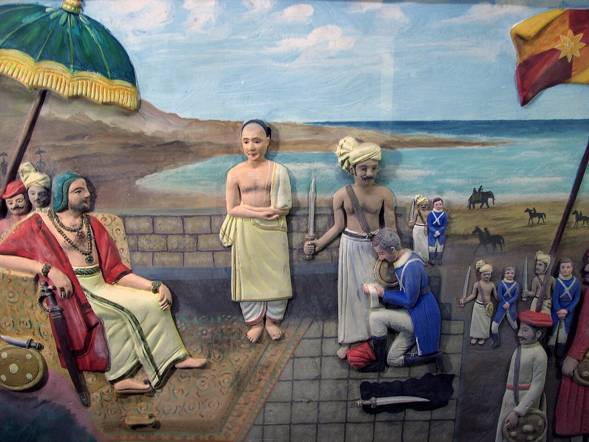
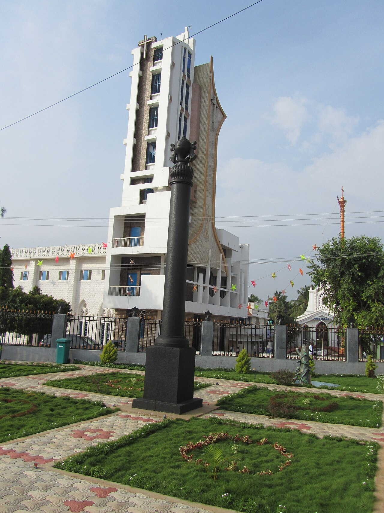
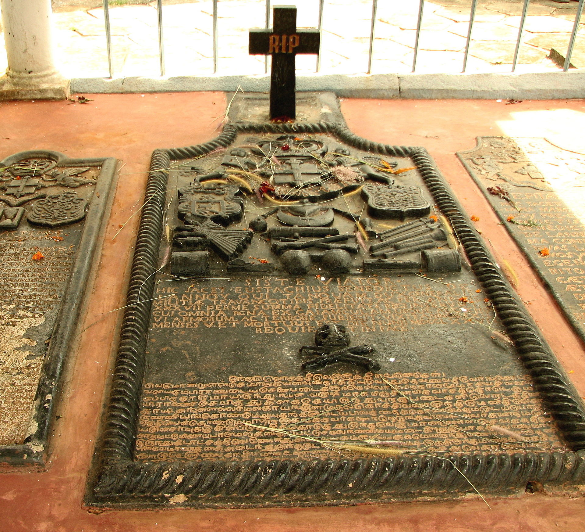
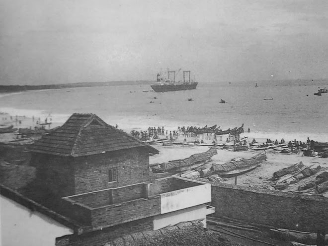

Background
Dutch factories on the Malabar coast and a natural harbour at Colachel — the southernmost gateway to the pepper and cardamom trade of Travancore.
Where an Indian king broke a European empire on the beaches of the south.
On a sun-baked shore at Colachel, at the tip of the Deccan, Maharaja Marthanda Varma's Travancore forces struck a telling blow against the Dutch East India Company. Their defeat here ended Dutch colonial ambition in India once and for all — and announced the rise of Travancore as a great power whose armies would soon number among the strongest in the subcontinent.
By the 1730s the Dutch East India Company, having driven the Portuguese from the Malabar coast a century earlier, held factories along the spice routes of southern India. At Colachel — a natural harbour at the southern tip of the subcontinent, then in the Kingdom of Travancore — the Company sought to tighten its grip on the pepper and cardamom trade and to keep its British and French rivals at bay.
Dutch factories on the Malabar coast and a natural harbour at Colachel — the southernmost gateway to the pepper and cardamom trade of Travancore.
Marthanda Varma's consolidation of the southern chiefdoms threatened Dutch trading concessions; the Company dispatched an expedition to overawe him.
On 10 March 1741 a disciplined Travancore line — muskets, rockets, and cannon — met the Dutch column on the beach and broke it in open combat.
A decisive field victory by native forces over Europe's premier colonial power — it ended Dutch ambition in India and made Travancore a great power.
The army of a rising native kingdom against the naval might of Europe's greatest trading empire.
Why it mattered: Colachel was won outright on the battlefield — not by conspiracy or bribery. A disciplined native line, armed with muskets, rockets, and cannon, broke a European colonial column in open combat, and the very Dutch officers it captured went on to build the army that made Travancore the strongest power in southern India.
A Flemish officer captured at Colachel, De Lannoy entered Marthanda Varma's service and became known as the Valiya Kappittan (Senior Captain). He reorganised the Travancore army along European lines, drilled its men, and led its campaigns until his death in Travancore service in 1777 — a symbol of how defeat at Colachel became a lifelong asset for the kingdom.
When the Dutch squadron anchored off Colachel and began landing troops at dawn on 10 March 1741, Marthanda Varma's army was already drawn up behind the town's fortifications. The king had spent years moulding the small southern chiefdoms into a single state and drilling a modern force of Nair riflemen, Ezhava levies, and a rocket-and-cannon corps to defend it.
As the Dutch column tried to form up on the sand, the Travancore line opened a storm of cannon fire, disciplined musketry, and rocket volleys. Outnumbered, caught between the sea and a fortified shore, the Dutch wavered — and the king's infantry squares advanced to break their line. Plaisier was wounded and taken prisoner, and his surviving troops laid down their arms.
The Dutch column was broken, their commander captured, and their fleet stood offshore — powerless to intervene.
The Dutch column was broken and forced to surrender; their fleet stood offshore, powerless to intervene.
Roughly 800 Dutch soldiers were killed or captured. Travancore suffered heavy but manageable losses in the low thousands.
The wounded Dutch commander was taken prisoner, and his surviving troops laid down their arms on the beach.
Peace came on Travancore's terms — the Company withdrew from the southern coast, paid an indemnity, and never recovered its Indian ambitions.
A single morning on the Malabar coast closed the book on Europe's third great colonial empire in India — and opened the golden age of Travancore.
Colachel is celebrated as the first decisive defeat of a European colonial power by an Indian army in a set-piece battle — won in the open field, not through conspiracy.
With his frontier secured, Marthanda Varma expanded Travancore northward, defeating the neighbouring principalities. By the 1750s it was the dominant power of southern India.
Captured Dutch officers, led by Eustachius De Lannoy, drilled the kingdom's army into one of the finest in the subcontinent — a modern, European-style force.
Independence earned on the battlefield was respected by the European powers for the rest of the century — and is remembered today at the 1941 Colachel Victory Pillar.
From Marthanda Varma's rise to the moment the Dutch flag came down over the harbour.
Marthanda Varma takes the throne of Travancore at the age of 21. He inherits a kingdom riven by rival nobles and a Dutch factory at Colachel pressing for trade concessions.
Varma quells the rival feudatory lords of Travancore, brings the kingdom's armed forces under central command, and builds a modern army — the foundation for the coming clash.
Alarmed by Varma's consolidation and by his pressure on the Dutch factory at Colachel, the Company dispatches a naval expedition under Captain Jan Plaisier to overawe the king. Travancore refuses its demands.
At dawn, Dutch ships anchor off Colachel and their troops begin to land. Maharaja Varma's army — drawn up behind the town's fortifications — opens fire with rocket and cannon batteries and disciplined musketry. The Dutch line breaks; Plaisier is wounded and taken prisoner, and his surviving troops surrender.
The Dutch fleet, unable to relieve the captured garrison, negotiates terms. The Company withdraws from Colachel, surrenders its coastal factories, and agrees to a treaty of friendship and non-interference with Travancore.
The captured Dutch officers, led by Eustachius De Lannoy, enter Marthanda Varma's service. De Lannoy reorganises the Travancore army along European lines and leads it through the king's northern campaigns, dying in Travancore service in 1777.
The lunge of the spear at the tip of the Deccan, the smoke of the rocket batteries, and the white flags hauled down on the harbour.









The classic histories of Malabar and the Dutch, together with the modern studies that frame Colachel in the wider story of European expansion in India.
Malabar Manual. Madras: Government Press. The classic nineteenth-century account of the Travancore–Dutch War and the Battle of Colachel.
Read moreMalabar and the Dutch: Being the History of the Fall of the Nayar Power in Malabar. Bombay: Taraporevala. The standard study of the Dutch in Malabar and their final defeat at Colachel.
About the authorA Survey of Kerala History. Kottayam: Sahitya Pravarthaka Co-operative Society. The rise of Travancore under Marthanda Varma and the significance of 1741.
About the authorHistories of Medicine and Healing in the Indian Ocean World. Provides the wider 18th-century Indian Ocean context of European trading rivalries.
A History of India. Palgrave. Situates Travancore's resistance within the broader pattern of European expansion in India.
Battle of Colachel. General reference for the battle's chronology and historiography.
Read the article